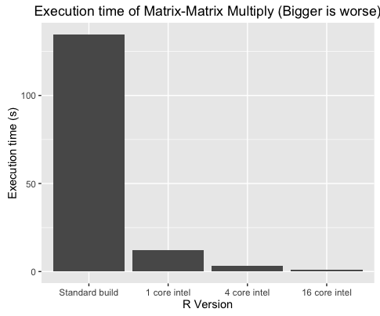

Accelerated versions of R for Iceberg
To Long; Didn't Read -- Summary
I've built a version of R on Iceberg that is faster than the standard version for various operations. Documentation is at http://docs.hpc.shef.ac.uk/en/latest/iceberg/software/apps/r.html.
If it works more quickly for you, or if you have problems, please let us know by emailing rse@sheffield.ac.uk
Background
I took over building R for Iceberg, Sheffield's High Performance Computing System, around a year ago and have been incrementally improving both the install and the documentation with every release. Something that's been bothering me for a while is the lack of optimisation. The standard Iceberg build uses an ancient version of the gcc compiler and (probably) unoptimised versions of BLAS and LAPCK.
BLAS and LAPACK are extremely important libraries -- they provide the code that programs such as R use for linear algebra: Matrix-Matrix multiplication, Cholesky decomposition, principle component analysis and so on. It's important to note that there are lots of implementations of BLAS and LAPACK: ATLAS, OpenBLAS and the Intel MKL are three well-known examples. Written in Fortran, the interfaces of all of these versions are identical, which means you can use them interchangeably, but the speed of the implementation can vary considerably.
The BLAS and LAPACK implementations on Iceberg are undocumented (before my time!) which means that we have no idea what we are dealing with. Perhaps they are optimised, perhaps not. I suspected 'not'.
Building R with the Intel Compiler and MKL
The Intel Compiler Suite often produces the fastest executables of all available compilers for any given piece of Fortran or C/C++ code. Additionally, the Intel MKL is probably the fastest implementation of BLAS and LAPACK available for Intel Hardware. As such, I've had Build R using Intel Compilers and MKL on my to-do list for some time.
Following a recent visit to the University of Lancaster, where they've been doing this for a while, I finally bit the bullet and produced some build-scripts. Thanks to Lancaster's Mike Pacey for help with this! There are two versions (links point to the exact commits that produced the builds used in this article):
- install_intel_r_sequential.sh - Linked to the sequential (i.e. single-core) version of Intel MKL.
- install_intel_r_parallel.sh - Linked to the parallel version of Intel MKL.
The benchmark code is available in the Sheffield HPC examples repo https://github.com/mikecroucher/HPC_Examples/. The exact commit that produced these results is 35de11e
Testing
It's no good having fast builds of R if they give the wrong results! To make sure that everything is OK, I ran R's installation test suite and everything passed. If you have an account on iceberg, you can see the output from the test suite at /usr/local/packages6/apps/intel/15/R/sequential-3.3.1/install_logs/make_install_tests-R-3.3.1.log.
It's important to note that although the tests passed, there are differences in output between this build and the reference build that R's test suite is based on. This is due to a number of factors such as the fact that Floating point addition is not associative and that the signs of eigenvectors are arbitrary and so on.
A discussion around these differences and how they relate to R can be found on nabble.
How fast is it?
So is it worth it? I ran a benchmark called linear_algebra_bench.r that implemented 5 tests
- MatMul - Multiplies two random 1000 x 5000 matrices together
- Chol - Cholesky decomposition of a 5000 x 5000 random matrix
- SVD - Singular Value Decompisition of a 10000 x 2000 random matrix
- PCA - Principle component analysis of a 10000 x 2000 random matrix
- LDA - A Linear Discriminant Analysis problem
Run time of these operations compared to Iceberg's standard install of R is shown in the table below.
- Iceberg submission scripts for these can be found in the HPC Examples repo
Execution time in seconds (Mean of 5 independent runs)
| MatMul | Chol | SVD | PCA | LDA | |
|---|---|---|---|---|---|
| Standard R | 134.70 | 20.95 | 46.56 | 179.60 | 132.40 |
| Intel R with sequential MKL | 12.19 | 2.24 | 9.13 | 24.58 | 31.32 |
| Intel R with parallel MKL (2 cores) | 7.21 | 1.60 | 5.43 | 14.66 | 23.54 |
| Intel R with parallel MKL (4 cores) | 3.24 | 1.17 | 3.34 | 7.87 | 20.63 |
| Intel R with parallel MKL (8 cores) | 1.71 | 0.38 | 1.99 | 5.33 | 15.82 |
| Intel R with parallel MKL (16 cores) | 0.96 | 0.28 | 1.60 | 4.05 | 13.65 |

Another way of viewing these results is to see the speed up compared to the standard install of R. Even on a single CPU core, the Intel builds are between 4 and 11 times faster than the standard builds. Making use of 16 cores takes this up to 141 times faster in the case of Matrix-Matrix Multiplication!
Speed up compared to standard R
| MatMul | Chol | SVD | PCA | LDA | |
|---|---|---|---|---|---|
| Standard R | 1 | 1 | 1 | 1 | 1 |
| Intel R with sequential MKL | 11 | 9 | 5 | 7 | 4 |
| Intel R with parallel MKL (2 cores) | 19 | 13 | 9 | 12 | 6 |
| Intel R with parallel MKL (4 cores) | 42 | 18 | 14 | 23 | 6 |
| Intel R with parallel MKL (8 cores) | 79 | 55 | 23 | 34 | 8 |
| Intel R with parallel MKL (16 cores) | 141 | 75 | 29 | 44 | 10 |
Parallel environment
The type of parallelisation in use here is OpenMP. As such, you need to use Iceberg's openmp environment. That is, if you want 8 cores (say), add the following to your submission script
#$ -pe openmp 8 export OMP_NUM_THREADS=8
Using OpenMP limits the number of cores you can use per job to the number available on a single node. At the time of writing, this is 16.
How many cores: Finding the sweet spot
Note that everything is fastest when using 16 cores! As such, it may be tempting to always use 16 cores for your jobs. This will almost always be a mistake. It may be that the aspect of your code that's accelerated by this build doesn't account for much of the runtime of your problem. As such, those 16 cores will sit idle most of the time -- wasting resources.
You'll also spend a lot longer waiting in the queue for 16 cores than you will for 2 cores which may swap any speed gains.
You should always perform scaling experiments before deciding how many cores to use for your jobs. Consider the Linear Discriminant Analysis problem, for example. Using just one core, Intel build gives us a 4 times speed-up compared to the standard build. Moving to 8 cores only makes it twice as fast again. As such, if you had lots of these jobs to do, your throughput would be higher running lots of single core jobs compared to lots of 8 core jobs.
If matrix-matrix multiply dominates your runtime, on the other hand, it may well be worth using 16 cores.
Using this version of R for your own work
As a user, there are a few things you need to be aware of with the Intel builds of R so I've created a separate documentation page for them. This is currently at http://docs.hpc.shef.ac.uk/en/latest/iceberg/software/apps/intel_r.html
My recommendation for using these builds is to work through the following procedure
- Ensure that your code runs with Iceberg's standard version of R and produce a test result.
- In the first instance, switch to the sequential version of the Intel R build. In the best case, this will just require changing the module. You may also need to install some of your packages since the Intel build has a separate packages directory to the standard build.
- If you see speed-up and the results are consistent with your test result, try the parallel version. Initially start with 2 cores and move upwards to find the sweet spot.